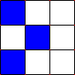
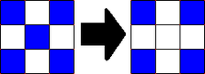
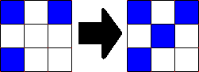

Conway's Game of Life, geconceptualiseerd door John Conway, is een cellulaire automaton die volgens een simpele set regels de uitbreiding/implosie van populaties simuleert. De regels zijn als volgt:
1. Als een cel door 2 of 3 gekleurde buurcellen omgeven wordt, blijft deze cel zelf ook gekleurd, zoals in het voorbeeld hieronder.
deze afbeelding blijft de middelste cel gekleurd, want de cel wordt omgeven door 2 andere gekleurde cellen.
2. Als een cel door 4 of meer gekleurde buurcellen omgeven wordt, gaat deze cel dood door 'overbevolking' (dat wil zeggen, de cel wordt wit).
Als een cel door minder dan twee gekleurde buurcellen omgeven wordt, gaat deze cel ook dood, maar dan door eenzaamheid. Zie voorbeeld hieronder.
deze afbeelding gaat de middelste cel dood, want de cel wordt door meer dan 3 of minder dan 2 gekleurde cellen omgeven.
3. Als een dode cel wordt omgeven door precies 3 gekleurde buurcellen, wordt deze dode cel ook gekleurd ('geboren'), zoals in het voorbeeld hieronder.
deze afbeelding wordt de middelste cel geboren, want de cel wordt door exact 3 gekleurde cellen omgeven.
Young
Old